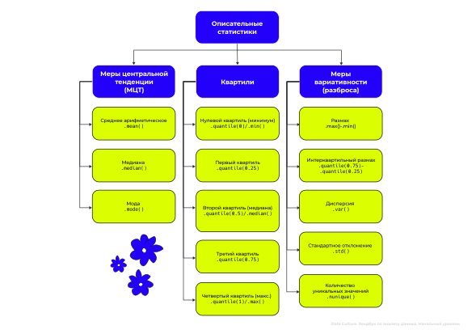
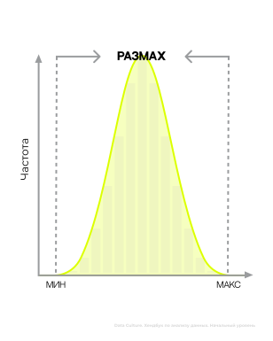
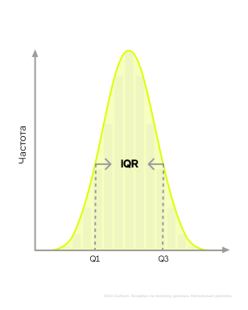
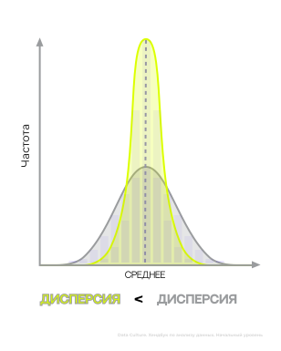
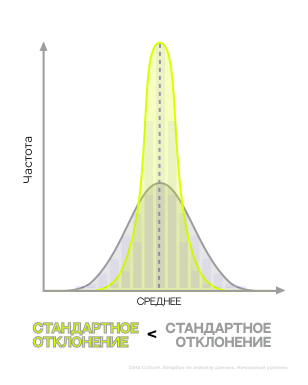
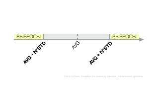

Хендбук. Анализ данных. Начальный уровень
Глава 6. Описательные статистики. Пропуски и выбросы
6.1 Что такое описательные статистики?
В предыдущих главах мы рассмотрели структуры продаж нашей пиццерии. Но чтобы уверенно двигаться вперёд и развивать бизнес, нужно выйти за пределы собственной компании и взглянуть шире — оценить обстановку на рынке общественного питания. Рассмотрим, как это сделать, на примере данных
restaurants.csv:
| ПРИЗНАК | ОПИСАНИЕ | ФОРМАТ ДАННЫХ (.dtypes) |
|---|---|---|
| name | название ресторана | object |
| restaurant_type | тип ресторана | object |
| rate | рейтинг ресторана | float64 |
| votes | количество людей, поставивших оценку ресторана | int64 |
| avg_receipt | средний размер чека на двоих в ресторане | float64 |
| online_order | возможность сделать онлайн заказ (1 - есть, 0 - нет) | int64 |
| table_booking | возможность забронировать столик (1 - есть, 0 - нет) | int64 |
| cuisines_type | кухня в ресторане | object |
| area | район, где расположен ресторан | object |
Одно наблюдение - это один ресторан.
import pandas as pd
df = pd.read_csv('restaurants.csv')
df.head()| name | restaurant_type | rate | votes | avg_receipt | online_order | table_booking | cuisines_type | area | |
|---|---|---|---|---|---|---|---|---|---|
| 0 | #FeelTheROLL | Quick Bites | 3.4 | 7.0 | 200.0 | 0 | 0 | Fast Food | Bellandur |
| 1 | #L-81 Cafe | Quick Bites | 3.9 | 48.0 | 400.0 | 1 | 0 | Fast Food, Beverages | Byresandra,Tavarekere,Madiwala |
| 2 | #refuel | Cafe | 3.7 | NaN | 400.0 | 1 | 0 | Cafe, Beverages | Bannerghatta Road |
| 3 | '@ Biryani Central | Casual Dining | 2.7 | 135.0 | 550.0 | 1 | 0 | Biryani, ... | Marathahalli |
| 4 | '@99 | Takeaway, Delivery | 3.4 | 37.0 | 200.0 | 0 | 0 | Mughlai, Biryani, ... | Whitefield |
Для такого исследования нам потребуются описательные статистики. Чтобы охарактеризовать среднестатистический ресторан, будем использовать меры центральной тенденции, раскрывающие портрет типичного игрока индустрии. Чтобы изучить разнообразие рынка, рассчитаем меры вариативности – они покажут, насколько разнятся заведения по ключевым характеристикам. Наконец, чтобы заглянуть внутрь структуры рынка и выявить слои заведений различного уровня, задействуем квартили.
Чтобы автоматически рассчитать описательные статистики для столбцов типа int64 и float64, нужно применить метод .describe() к нашему датафрейму:
df.describe()| rate | votes | avg_receipt | online_order | table_booking | |
|---|---|---|---|---|---|
| count | 6407.0 | 6370.0 | 6407.0 | 6407.0 | 6407.0 |
| mean | 3.584642 | 204.234694 | 555.880912 | 0.537225 | 0.113157 |
| std | 0.424497 | 621.802723 | 475.615400 | 0.498651 | 0.316810 |
| min | 2.0 | 1.0 | 40.0 | 0.0 | 0.0 |
| 25% | 3.3 | 13.0 | 300.0 | 0.0 | 0.0 |
| 50% | 3.6 | 40.0 | 400.0 | 1.0 | 0.0 |
| 75% | 3.9 | 149.0 | 650.0 | 1.0 | 0.0 |
| max | 4.9 | 16345.0 | 6000.0 | 1.0 | 1.0 |
- count - количество непропущенных значений (не NaN) в признаке, аналог метода .count()
- mean - среднее арифметическое (МЦТ)
- std - стандартное отклонение (мера вариативности)
- min - минимум (квартили)
- 25% - первый квартиль (квартили)
- 50% - медиана/второй квартиль (МЦТ/квартили)
- 75% - третий квартиль (квартили)
- max - максимум (квартили)
Если описательные статистики нужны по признакам в формате object, добавьте внутрь .describe() параметр include='object':
df.describe(include='object')| name | restaurant_type | cuisines_type | area | |
|---|---|---|---|---|
| count | 6407 | 6387 | 6407 | 6407 |
| unique | 6407 | 80 | 2035 | 30 |
| top | Zyksha | Quick Bites | North Indian, Chinese | Byresandra,Tavarekere,Madiwala |
| freq | 1 | 2467 | 381 | 735 |
- count - количество непропущенных значений (не NaN) в признаке, аналог метода .count()
- unique - количество уникальных категорий, аналог метода .nunique() (мера вариативности)
- top - самое часто встречаемое значение, мода (МЦТ)
- freq - частота моды
6.2 Какие бывают меры центральной тенденции?
Когда перед нами большой объём информации, сложно сразу определить основные особенности или характеристики признаков – в таком случае на помощь приходят меры центральной тенденции (МЦТ)
Мы рассмотрим три описательных статистики: среднее арифметическое, медиана и мода.
СРЕДНЕЕ АРИФМЕТИЧЕСКОЕ
Среднее арифметическое (также называемое средним значением) является наиболее распространённым способом выражения общей тенденции или основного уровня данных. В математике среднее обозначается x̄. Если мы хотим рассчитать среднее для некоторого признака X, нужно найти сумму по нему и разделить на количество наблюдений: x̄= (x1 + x2 + ... + xn) / n
Среднее, как правило, рассчитывается для количественных признаков. Чтобы рассчитать среднее арифметическое в Python, нужно воспользоваться методом .mean(). Например, мы хотим узнать средний рейтинг ресторанов (rate):
df['rate'].mean()np.float64(3.5846417980334015)
Или хотим выяснить средний размер чека (avg_receipt):
df['avg_receipt'].mean()np.float64(555.8809115030435)
Помимо оценки количественных признаков, среднее арифметическое применяется к категориальным бинарным данным, закодированным в виде 1 и 0. Для таких данных среднее арифметическое показывает долю 1 в данных. В наших данных есть признак online_order - идентификатор того, есть ли в ресторане возможность сделать онлайн-заказ. Если такая возможность есть - 1, иначе 0. Если мы хотим найти долю ресторанов, в которых есть опция онлайн-заказа, напишем следующий код:
df['online_order'].mean()np.float64(0.5372249102544092)
Получается, доля ресторанов, в которых есть возможность заказать онлайн, составляет 0.53. Для удобства можно умножить значение на 100, чтобы перевести доли в проценты:
df['online_order'].mean()*100np.float64(53.722491025440924)
Кажется, что среднее арифметическое идеально подходит для описания типичного наблюдения в данных, однако у него есть серьезный недостаток — чувствительность к выбросам. Выбросы — это крайне высокие или низкие значения, резко отличающиеся от остальных данных. Например, если в вашем наборе данных преобладают недорогие заведения общепита с небольшими средними чеками, но присутствуют несколько элитных ресторанов с гораздо более высокими ценами, то среднее арифметическое размера чека будет заметно увеличено за счет этих дорогих заведений. Из-за этого средняя величина станет завышенной, и получится неверное представление о типичном размере чека в большинстве мест.
МЕДИАНА
Медиана - это мера центральной тенденции, лежащая по центру распределения данных. В отличие от среднего, медиана к выбросам устойчива; это связано с методологией ее рассчета, в которой мы берем не все данные, а только те, что лежат посередине:
- Если количество наблюдений нечетное, медиана - это значение, стоящее посередине. Например, в [1, 2, 3, 4, 5] медиана равна 3.
- Если количество наблюдений четное, медиана - это среднее значение двух центральных наблюдений. Например, в [1, 2, 3, 4] медиана равна 2.5.
Аналогично среднему арифметическому, медиана рассчитывается, как правило, для количественных признаков. Если мы хотим рассчитать медиану размера чека (avg_receipt), воспользуемся методом .median():
df['avg_receipt'].median()400.0
Получается, в половине ресторанов размер чека меньше 400 у.е., а в другой половине больше
МОДА
Последняя мера центральной тенденции - мода. Она показывает самое частое (популярное) значение в данных. Если значения среднего и медианы может быть только одно, то мод в данных может быть несколько:
Данные: F D A D B C
| Значение | Частота |
|---|---|
| F | 1 |
| D | 2 |
| A | 1 |
| B | 1 |
D встречается чаще всего, значит D - МОДА.
Как правило, моду рассчитывают для категориальных признаков. Если мы хотим найти, какая кухня (cuisines_type) наиболее распространенная в наших данных, воспользуемся методом .mode():
df['cuisines_type'].mode()| cuisines_type | |
|---|---|
| 0 | North Indian, Chinese |
Этот метод возвращает серию (Series). Если бы мод было несколько (какие-то значения встретились одинаково часто), то все они вывелись бы в этой таблице. Чтобы извлечь конкретное значение моды, к нему нужно обратиться по индексу:
df['cuisines_type'].mode()[0]North Indian, Chinese
Моду количественного признака можно оценить по гистограмме распределения.
СРАВНЕНИЕ МЕР ЦЕНТРАЛЬНОЙ ТЕНДЕНЦИИ
Мы разобрали три основных МЦТ. У каждой из них есть особенности использования и интерпретации:
| СРЕДНЕЕ АРИФМЕТИЧЕСКОЕ | МЕДИАНА | МОДА | |
|---|---|---|---|
| Определение | Отношение суммы всех наблюдений к их количеству | Срединная МЦТ | Самые частые/популярные значения |
| Метод | .mean() | .median() | .mode() |
| Устойчивость к выбросам | ✕ | ✓ | - |
| Типы данных: | |||
| количественные | ✓ | ✓ | ✓ |
| категориальные | Бинарные, закодированные в виде 1 и 0 (доля 1 в данных) | ✕ | ✓ |
Теперь посмотрим, как графически оценивать среднее, медиану и моду по гистограмме.
Для начала рассмотрим симметричные распределения. Распределение можно назвать симметричным, если гистограмма зеркально-симметрична относительно центра графика. Для оценки мер центральной тенденции в таких распределениях нужно запомнить два правила:
-
Среднее и медиана совпадают (или почти совпадают) и находятся по центру
-
Мода - это пик(и)

Выбросов (они могут находится на хвостах распределения) нет – а если и есть, то они уравновешивают среднее арифметическое слева и справа, и оно остается по центру. Медиана просто делит данные пополам.
Если в данных один пик, как на гистограмме слева, со средним и медианой будет совпадать также и мода, так как пик данных находится по центру. Когда в данных одна мода, такое распределение называются унимодальным.
В данных может быть и несколько пиков, как на графике справа. Когда пиков два, такое распределение называется бимодальным, и в нем каждый из пиков будет модой. Среднее и медиана также будут находиться посередине.
Построим гистограмму распределения рейтинга ресторанов (rate):
df['rate'].plot(kind='hist', bins=15)В целом, полученное распределение практически симметрично. Давайте сравним среднее и медиану для него:
round(df['rate'].mean(), 1) # среднееnp.float64(3.6)
round(df['rate'].median(), 1) # медиана3.6
Мы видим, что среднее и медиана совпадают. Если мы мысленно проведем линию на гистограмме признака rate на значении 3.6, она окажется по середине графика.
Из равенства среднего и медианы вытекает еще одно свойство:
если среднее и медиана совпадают (или практически совпадают), мы не можем утверждать, что в даннных есть экстремальные значения (выбросы)
Распределения также могут быть асимметричными, в которых относительно центра графика отсутвует какая-либо зеркальность. В таких распределениях для оценки мер центральной тенденции пользуемся следующими тремя правилами:
Среднее арифметическое тяготеет к тяжелым хвостам (к выбросам)
Медиана тяготеет к основной группе данных (от выбросов)
Мода - это пик(и)

Для определения моды мы пользуемся той же логикой, что и в симметричных распределениях: мода - там, где пик. Теперь разберемся со средним и медианой.
На первой гистограмме тяжелый хвост находится справа. В этом тяжелом хвосте собраны экстремально высокие значения (выбросы), значительно отличающиеся от большей части наших данных. Из всех мер центральной тенденции среднее будет ближе всего к этому тяжелому хвосту, так как эта МЦТ не устойчива к выбросам и всегда тянется к экстремальным значениям. Медиана будет дальше от выбросов, чем среднее, так как эта МЦТ к выбросам устойчива. Из этого наблюдения у нас вытекает еще одна закономерность:
Если среднее значительно больше, чем медиана, это свидетельствует о том, что в данных есть экстремально высокие значения
В тяжелом хвосте на второй гистограмме собрались экстремально низкие значения (выбросы). Логика определения среднего и медианы здесь точно такая же. Среднее не устойчиво к выбросам, а значит оно будет тяготеть к тяжелым хвостам и будет ближе всего к ним. Медиана к выбросам устойчива, а значит она будет дальше от экстремальных значений. На основании этого мы можем сделать еще один вывод:
Если среднее значительно меньше, чем медиана, это свидетельствует о том, что в данных есть экстремально низкие значения
Построим гистограмму распределения размера чека (avg_receipt):
df['avg_receipt'].plot(kind='hist', bins=15)Распределение размера чека асимметричное. В большей части ресторанов чек не превышает 2000 у.е., однако мы видим на гистограмме тяжелый хвост справа, там находятся рестораны с экстремально высоким размером чека. Значит мы можем предположить, что для данного признака среднее значение будет больше, чем медиана. Давайте это предположение проверим:
round(df['avg_receipt'].mean(), 1) # среднееnp.float64(555.9)
round(df['avg_receipt'].median(), 1) # медиана400.0
Как мы видим, среднее больше медианы почти на 156 у.е. Значит наши выводы на основе гистограммы оказались верны.
6.3 Какие бывают квартили?
Квартили позволяют эффективно разделить данные на отдельные слои на основании некоторого количественного признака. В контексте ресторанного рынка использование квартилей помогает выделить различные сегменты заведений – например, проанализировав рейтинг мест общественного питания (rate).
Выделяют пять основных квартилей:
-
Нулевой квартиль (Q₀)
Это такое значение, меньше которого 0% данных. Это то же самое, что минимум в данных. Чтобы рассчитать нулевой квартиль, можно воспользоваться методом .quantile(0) или .min():
df['rate'].quantile(0)np.float64(1.8)
df['rate'].min()1.8
Самый низкий рейтинг ресторана – 1.8 звезд. Или, другими словами, 100% ресторанов имеют рейтинг не меньше 1.8.
-
Первый квартиль (Q₁)
Это значение, меньше которого 25% данных, или значение, больше которого 75% данных.
Для рассчета первого квартиля используется метод .quantile(0.25):
df['rate'].quantile(0.25)3.3
25% ресторанов имеют рейтинг менее 3.3 звезд. Эти 25% ресторанов можно отнести к худшим ресторанам с самым низким рейтингом. У остальных 75% ресторанов рейтинг более 3.3 звезд.
-
Второй квартиль (Q₂)
Это то же самое, что медиана. Второй квартиль делит данные пополам: меньше него 50% данных и больше него тоже 50%.
Для рассчета этого значения используется либо метод .quantile(0.5), либо .median():
df['rate'].quantile(0.5)np.float64(3.6)
df['rate'].median()3.6
50% ресторанов имеют рейтинг менее (более) 3.6 звезд, или медиана рейтинга ресторана составляет 3.6 звезд
-
Третий квартиль (Q₃)
Это значение, меньше которого 75% данных. Или значение, больше которого 25% данных.
Для рассчета третьего квартиля используется метод .quantile(0.75):
df['rate'].quantile(0.75)np.float64(3.9)
25% ресторанов имеют рейтинг более 3.9 звезд. Это сегмент ресторанов с самым высоким рейтингом. У остальных 75% ресторанов рейтинг меньше этого значения.
-
Четвертый квартиль (Q₄)
Это то же самое, что максимум данных. То есть, это такое значение, больше которого 0% данных.
Для рассчета этого значения используется либо метод .quantile(1), либо .max():
df['rate'].quantile(1)np.float64(4.9)
df['rate'].max()4.9

| НУЛЕВОЙ КВАРТИЛЬ (МИНИМУМ) |
ПЕРВЫЙ КВАРТИЛЬ | ВТОРОЙ КВАРТИЛЬ (МЕДИАНА) |
ТРЕТИЙ КВАРТИЛЬ | ЧЕТВЕРТЫЙ КВАРТИЛЬ (МАКСИМУМ) |
|
|---|---|---|---|---|---|
| Определение | 100% значений не меньше чем Q₀ | 75% значений больше чем Q₁ | 50% значений больше чем Q₂ | 25% значений больше чем Q₃ | 100% значений не больше чем Q₄ |
| Минимальное значение равно Q₀ | 25% значений меньше чем Q₁ | 50% значений меньше чем Q₂ | 75% значений меньше чем Q₃ | Максимальное значение равно Q₄ | |
| Метод | .quantile(0) .min() |
.quantile(0.25) | .quantile(0.5) .median() |
.quantile(0.75) | .quantile(1) .max() |
| Типы данных: | |||||
| количественные | ✓ | ✓ | ✓ | ✓ | ✓ |
| категориальные | ✕ | ✕ | ✕ | ✕ | ✕ |
6.4 Какие бывают меры вариативности?
Мы описали типичный ресторан с помощью мер центральной тенденции. Затем мы провели сегментацию ресторанов по уровням популярности, используя квартили, выделяя верхние и нижние слои по качеству обслуживания и привлекательности для клиентов.
Теперь, чтобы глубже разобраться в структуре рынка и выяснить, насколько сильно различаются рестораны друг от друга, нам необходимы меры вариативности (разброса).
РАЗМАХ
Если мы хотим узнать амплитуду разброса количественного признака, можно рассчитать размах. Чтобы его рассчитать, нужно найти разницу между максимальным и минимальным значением. Например, мы хотим найти размах размера чека (avg_receipt):
df['avg_receipt'].max() - df['avg_receipt'].min()5960.0
Размер чека в местах общественного питания меняется в диапазоне 5960 у.е.. Это довольно большое число, говорящие о разнообразии мест, которые представленны в наших данных: у нас есть скромные места с небольшим чеком, но представлены и более изысканные дорогие заведения.
У размаха есть большой недостаток – он не устойчив к экстремальным значениям (выбросам). То есть, если в данных только один дорогой ресторан, где средний размер чека составляет, к примеру, 7000 у.е., а во всех остальных ресторанах чек около 1000 у.е., по итоговому числу может показаться, что дорогих ресторанов очень много – это приведет к искажению общего понимания рынка.
Этот недостаток связан с тем, что для рассчета размаха берутся крайние значения признака (максимум и минимум), а они зачастую могут оказаться выбросами, единичными искажениями в данных.
ИНТЕРКВАРТИЛЬНЫЙ РАЗМАХ (IQR)
Если мы хотим оценить, в каком диапазоне меняется значение, но при этом нам нужна мера вариативности, устойчивая к выбросам, можно рассчитать интерквартильный размах (межквартильный диапазон). Довольно часто его сокращают как IQR (Interquartile Range). Чтобы его рассчитать, нужно из третьего квартиля (Q₃) вычесть первый квартиль (Q₁):
df['avg_receipt'].quantile(0.75) - df['avg_receipt'].quantile(0.25)np.float64(300.0)
Устойчивость к выбросам этой метрики обусловлена способом ее расчета: берутся не крайние значения, которые могут оказаться выбросами, а Q₁ и Q₃, расположенные ближе к центру распределения. Между этими эти квартилями находится 50% наблюдений (в нашем случае – ресторанов), поэтому мы можем сказать, что диапазон разброса центральных 50% наблюдений по размеру чека составляет 300 у.е.
ДИСПЕРСИЯ
Еще одна мера, позволяющая оценить разброс данных, это дисперсия. В математике она обозначается греческой буква сигма в квадрате - σ2 . Это мера показывает усредненный квадрат отклонений количественного признака от среднего арифметического:
x1,x2,...,xn - каждое наблюдение количественного признака
x̄ - среднее арифметическое
(xn−x̄)2 - квадрат отклонения данных от среднего арифметического. Квадрат берется, чтобы не появился минус, так как отклонение может быть как в большую, так и в меньшую сторону от среднего.
n - количество наблюдений. Делим на число наблюдений, чтобы найти усредненное значение.
Для того чтобы рассчитать дисперсию в Python, нам не нужна формула, нужно лишь воспользоваться методом .var() (от слова variance, – англ. дисперсия)
df['avg_receipt'].var()224698.25283148492
Недостатком дисперсии как меры вариативности является ее зависимость от среднего арифметического, вследствие чего она крайне восприимчива к наличию выбросов. Более того, поскольку расчет основан на квадратах отклонений, итоговая величина оказывается неудобной для интуитивного осмысления, так как представляет собой квадратную меру первоначальной единицы измерения.
Тем не менее, попробовать выразить смысл полученного результата можно следующим образом: усредненное квадратичное отклонение размера чека от среднего значения составило 224698.25 у.е2.
Мы можем использовать дисперсию для сравнения степени разброса нескольких наборов данных. Чем больше дисперсия, тем больше разброс данных, и тем менее плотно наши данные собраны вокруг среднего и больше растянуты по числовой оси. С точки зрения гистограммы распределения это выглядит так:
СТАНДАРТНОЕ ОТКЛОНЕНИЕ
Чтобы избавиться от квадрата в дисперсии, можно взять корень. Такая мера вариативности называется стандартным отклонением и обозначется σ , но уже без квадрата:
Чтобы рассчитать стандартное отклонение, воспользуемся методом .std() от англ. standard deviation:
df['avg_receipt'].std()474.02347286973554
Стандартное отклонение также чувствительно к выбросам, но гораздо удобнее в интерпретации: в среднем размер чека отличается от среднего арифметического на 474.02 у.е..
Стандартное отклонение также можно использовать для сравнения разброса нескольких наборов данных. Логика такая же, как и с дисперсией: чем больше стандартное отклонение, тем больше вариативность данных, и тем больше данные растянуты по оси:
КОЛИЧЕСТВО УНИКАЛЬНЫХ ЗНАЧЕНИЙ
Меры вариативности, которые мы рассмотрели выше, используется только для количественных признаков. Если мы хотим оценить разнообразие категориального признака, можно рассчитать количество уникальных значений с помощью метода .nunique():
df['cuisines_type'].nunique()2045
Другими словами, в вашем датасете содержится 2045 различных типов кухни.
| РАЗМАХ | ИНТЕРКВАРТИЛЬНЫЙ РАЗМАХ | ДИСПЕРСИЯ | СТАНДАРТНОЕ ОТКЛОНЕНИЕ | КОЛИЧЕСТВО УНИКАЛЬНЫХ ЗНАЧЕНИЙ | |
|---|---|---|---|---|---|
| Определение | Амплитуда разброса данных | Диапазон в котором лежит 50% центральных данных | Усредненный квадрат отклонений данных от среднего | Усредненное отклонение данных от среднего | Количество категорий |
| Метод | .max()-.min() | .quantile(0.75)-.quantile(0.25) | .var() | .std() | .nunique() |
| Устойчивость к выбросам | ✕ | ✓ | ✕ | ✕ | - |
| Типы данных: | |||||
| количественные | ✓ | ✓ | ✓ | ✓ | ✕ |
| категориальные | ✕ | ✕ | ✕ | ✕ | ✓ |
6.5 Как искать выбросы в данных?
В прошлых разделах мы уже затронули тему выбросов. А сейчас поговорим о них чуть подробнее.
В анализе выбросы принято удалять, так как с ними плохо работают классические методы, такие как корреляция и регрессия, о которых мы будем говорить дальше.
Чтобы удалить выбросы, для начала нужно узнать их границы. Для этого используются два основных метода: метод N стандартных отклонений и метод 1.5 интерквартильных размахов.
МЕТОД N СТАНДАРТНЫХ ОТКЛОНЕНИЙ (STD)
Чтобы узнать границы выбросов методом N стандартных отклонений, нужно проделать следующие шаги:
- Рассчитать среднее арифметическое (avg):
avg = датафрейм['признак'].mean()
- Рассчитать стандартное отклонение (std):
std = датафрейм['признак'].std()
- Находим левую границу выбросов:
left = avg - N*std
- Находим правую границу выбросов:
right = avg + N*std
Выбросами будут являться все те наблюдения, которые меньше левой границы и больше, чем правая граница. Если мы хотим оставить только чистые данные без выбросов, можно сделать следующую фильтрацию:
df_clean = df[(датафрейм['признак'] >= left) & (датафрейм['признак'] <= right)]
А если, наоборот, нужны только выбросы, делаем следующую фильтрацию:
outliers = df[(датафрейм['признак'] < left) | (датафрейм['признак'] > right)]
Давайте рассчитаем границы выбросов для размера чека (avg_receipt). Будем считать, что выбросы – это все рестораны, в которых размер чека отличается от среднего более чем на 2 стандартных отклонения:
avg = df['avg_receipt'].mean()
std = df['avg_receipt'].std()
left = avg - 2*std
right = avg + 2*stdЕсли мы хотим сохранить чистые данные без выбросов в отдельную переменную, чтобы в дальнейшем с ними работать, сделаем следующую фильтрацию:
df_clean = df[(df['avg_receipt'] >= left) & (df['avg_receipt'] <= right)]
df_clean.shape[0]5825
В данных осталось 5825 ресторанов.
Если мы хотим посчитать количество выбросов, сделаем обратную фильтрацию:
df[(df['avg_receipt'] < left) | (df['avg_receipt'] > right)].shape[0]582
Выбросами по размеру чека оказались 582 ресторана.
МЕТОД 1.5 ИНТЕРКВАРТИЛЬНЫХ РАЗМАХОВ (IQR)
Второй метод для нахождения границ выбросов основывается на квартилях. Алгоритм его использования следующий:
- Рассчитать первый квартиль (q1):
q1 = датафрейм['признак'].quantile(0.25)
- Рассчитать третий квартиль (q3):
q3 = датафрейм['признак'].quantile(0.75)
- Находим интерквартильный размах (iqr):
iqr = q3-q1
- Находим левую границу выбросов:
left = q1 - 1.5*iqr
- Находим правую границу выбросов:
right = q3 + 1.5*iqr

Теперь давайте рассчитаем границы выбросов размера чека (avg_receipt) методом 1.5*IQR:
q1 = df['avg_receipt'].quantile(0.25)
q3 = df['avg_receipt'].quantile(0.75)
iqr = q3 - q1
left = q1 - 1.5*iqr
right = q3 + 1.5*iqrСделаем фильтрацию и посчитаем, сколько ресторанов согласно этому методу не будут считаться выбросами:
df[(df['avg_receipt'] >= left) & (df['avg_receipt'] <= right)].shape[0]5825
Для нахождения количества выбросов сделаем следующую фильтрацию:
df[(df['avg_receipt'] < left) | (df['avg_receipt'] > right)].shape[0]582
Количество выбросов и чистых данных для обоих методов совпали, но на практике они могут отличаться, и это нормально.
ЯЩИК С УСАМИ
Мы уже с вами умеем строить ящик с усами. Теперь разберемся подробнее с тем, какую информацию он может нам дать.
В первую очередь, с его помощью можно оценить наличие выбросов в данных.Выбросы на нем обозначаются кружками с левой и с правой стороны от "усов". Границы выбросов находятся в конце каждого из "усов" и рассчитываются по методу 1.5*IQR.
Левая граница ящика - это первый квартиль (Q₁), а правая граница - это третий квартиль (Q₃). Линия посередине - медиана (второй квартиль, Q₂)

Ящик всегда показывает квартили, а вот границы "усов" могут рассчитываться по разному в зависимости от того, есть в данных выбросы или нет.
Если в данных нет экстремально низких значений, то есть нет кружков слева:
Левая граница: минимум
Правая граница: Q3+1.5∗IQR
Если в данных нет экстремально высоких значений, то есть нет кружков справа:
Левая граница: Q1-1.5∗IQR
Правая граница: максимум
Если в данных нет экстремальных значений, то есть нет кружков вообще:
Левая граница: минимум
Правая граница: максимум
Давайте построим ящик с усами для рейтинга ресторанов (rate):
df['rate'].plot(kind='box', vert=False)
Мы видим, что выбросы есть слева и справа. Значит если мы хотим узнать точные значения основных показателей, будем следовать следующему алгоритму:
Самые крайние кружочки – это минимум и максимум:
df['rate'].min() # левый кружок2.0
df['rate'].max() # правый кружок4.9
Линия посередине ящика - это медиана:
df['rate'].median()3.6
Левая граница ящика - это первый квартиль (q1), а правая граница - третий квартиль (q3):
q1 = df['rate'].quantile(0.25) # левая граница коробки
q1np.float64(3.3)
q3 = df['rate'].quantile(0.75) # правая граница коробки
q3np.float64(3.9)
Теперь рассчитаем интерквартильный размах (IQR):
iqr = q3 - q1
iqrnp.float64(0.6000000000000001)
Теперь можем рассчитать значение левого и правого усов:
q1 - 1.5*iqr # левый усnp.float64(2.3999999999999995)
q3 + 1.5*iqr # правый усnp.float64(4.8)
А теперь построим ящик с усами для среднего размера чека в ресторанах (avg_receipt):
df['avg_receipt'].plot(kind='box', vert=False)
У данного признака нет экстремально низких значений, значит левый ус - это минимум, а самая крайна правая точка - это максимум:
df['avg_receipt'].min() # левый ус40.0
df['avg_receipt'].max() # крайная правая точка6000.0
Ящик интерпретируется точно также: линия посередине - это медиана, левая граница - первый квартиль (q1), правая граница - третий квартиль (q3):
df['avg_receipt'].median() # линия по середине коробки400.0
На ящике с усами нет среднего арифметического, но мы можем оценить, какое оно. В данных есть экстремально высокие значения, среднее тянется к выбросам и будет ближе к ним, чем медиана, значит среднее арифметическое будет больше чем 400.
q1 = df['avg_receipt'].quantile(0.25) # левая граница коробки
q1np.float64(300.0)
q3 = df['avg_receipt'].quantile(0.75) # правая граница коробки
q3np.float64(650.0)
Правый "ус" - это граница выбросов:
iqr = q3 - q1 # интерквартильный размах
q3 + 1.5*iqr # правый усnp.float64(1175.0)
6.6 Как обрабатывать пропуски в данных?
Теперь обсудим, как работать с пропусками в данных. Пропуск - это отсутствие информации, которое в Pandas обозначается как NaN.
ПОДСЧЕТ КОЛИЧЕСТВА ПРОПУСКОВ
Мы уже встречали метод агрегирования .count(), который возвращает количество непропущенных значений. Но если нам, наоборот, нужно количество пропусков, можно использоваться методом .isna(). Давайте применим его к нашему датафрейму по ресторанам и посмотрим, что он вернет:
df.isna()| name | restaurant_type | rate | votes | avg_receipt | online_order | table_booking | cuisines_type | area | |
|---|---|---|---|---|---|---|---|---|---|
| 0 | False | False | False | False | False | False | False | False | False |
| 1 | False | False | False | False | False | False | False | False | False |
| 2 | False | False | False | True | False | False | False | False | False |
| 3 | False | False | False | False | False | False | False | False | False |
| 4 | False | False | False | False | False | False | False | False | False |
| ... | ... | ... | ... | ... | ... | ... | ... | ... | ... |
| 6402 | False | False | False | False | False | False | False | False | False |
| 6403 | False | False | False | False | False | False | False | False | False |
| 6404 | False | False | False | False | False | False | False | False | False |
| 6405 | False | False | False | False | False | False | False | False | False |
| 6406 | False | False | False | False | False | False | False | False | False |
Этот метод преобразует все значения датафрейма в True и False. True говорит о том, что значение пропущено (NaN), а False - что пропуска нет. По сути True - это 1, а False - это 0 Если мы хотим посчитать количество пропусков в каждом столбце, нам нужно просуммировать True. Для этого применим к .isna() еще и метод .sum():
датафрейм.isna().sum()
df.isna().sum()| 0 | |
|---|---|
| name | 0 |
| restaurant_type | 20 |
| rate | 0 |
| votes | 37 |
| avg_receipt | 0 |
| online_order | 0 |
| table_booking | 0 |
| cuisines_type | 0 |
| area | 0 |
Мы видим 20 пропусков в признаке тип ресторана (restaurant_type) и 37 пропусков в количестве людей, поставивших оценку (votes). В остальных признаках пропусков нет.
Для того чтобы получить не количество, а долю пропусков, применим к .isna() метод .mean():
датафрейм.isna().mean()
df.isna().mean()| 0 | |
|---|---|
| name | 0.0 |
| restaurant_type | 0.003122 |
| rate | 0.0 |
| votes | 0.005775 |
| avg_receipt | 0.0 |
| online_order | 0.0 |
| table_booking | 0.0 |
| cuisines_type | 0.0 |
| area | 0.0 |
Такая команда возвращает долю пропусков, так как .isna() трансформирует признаки в бинарный формат, где каждый признак по факту 0 (False) и 1 (True), а среднее найденное по такому признаку будет показывать долю 1 в данных, то есть долю пропусков.
При необходимости долю пропусков можно перевести в проценты, просто домножив на 100:
датафрейм.isna().mean()*100
df.isna().mean()*100| 0 | |
|---|---|
| name | 0.0 |
| restaurant_type | 0.312159 |
| rate | 0.0 |
| votes | 0.577493 |
| avg_receipt | 0.0 |
| online_order | 0.0 |
| table_booking | 0.0 |
| cuisines_type | 0.0 |
| area | 0.0 |
ЗАМЕНА ПРОПУСКОВ
Пропуски в данных принято заменять на подходящую меру центральной тенденции. Пропуски в количественном признаке заменяют на медиану, а в категориальном - на моду. Заменить пропуски можно с помощью метода .fillna():
датафрейм['новый признак'] = датафрейм['признак'].fillna(на что заменяем)
Этот метод работает следующим образом: если в признаке значение не пропущено, то .fillna() просто переносит его в новый признак, а если он видит NaN, то записывает вместо него в новый признак то, что мы указали в круглых скобках.
Количестве людей, поставивших оценку (votes) является количественным признаком, поэтому заменим пропуски в нем на медиану, а чистый столбец без пропусков сохраним в новый признак (votes_clean):
med = df['votes'].median() # медиана
df['votes_clean'] = df['votes'].fillna(med) # заменяем
df.isna().sum() # проверяем| 0 | |
|---|---|
| name | 0 |
| restaurant_type | 20 |
| rate | 0 |
| votes | 37 |
| avg_receipt | 0 |
| online_order | 0 |
| table_booking | 0 |
| cuisines_type | 0 |
| area | 0 |
| votes_clean | 0 |
В столбце votes пропуски остались на месте, а вот в votes_clean пропусков уже нет. В дальнейшем, если вам понадобится столбец с количеством людей, оценивших ресторан, мы будем работать уже с новым признаком votes_clean.
Второй столбец с пропусками, restaurant_type - это тип ресторана. Столбец категориальный, поэтому пропуски в нем мы заменим на моду. Для начала рассчитаем моду для этого признака:
df['restaurant_type'].mode()| restaurant_type | |
|---|---|
| 0 | Quick Bites |
Напомним, что этот метод возвращает не просто значение, а Series таблицу. Чтобы извлечь значение моды, к нему нужно обратиться по индексу:
md = df['restaurant_type'].mode()[0]
mdТеперь мы можем заменить пропуски в признаке на значение моды, а результаты сохраним в новый признак restaurant_type_clean:
df['restaurant_type_clean'] = df['restaurant_type'].fillna(md) # заменяем
df.isna().sum() # проверяем| 0 | |
|---|---|
| name | 0 |
| restaurant_type | 20 |
| rate | 0 |
| votes | 37 |
| avg_receipt | 0 |
| online_order | 0 |
| table_booking | 0 |
| cuisines_type | 0 |
| area | 0 |
| votes_clean | 0 |
| restaurant_type_clean | 0 |
Теперь в restaurant_type_clean пропусков нет.